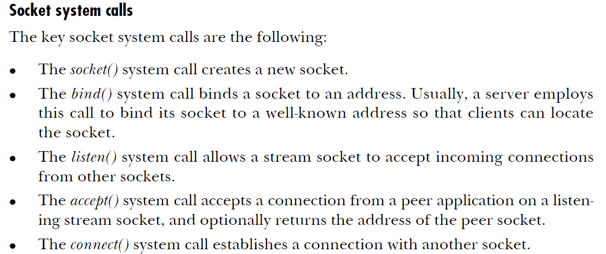

socket( )

bind( )


listen( )

backlog is the max number of pending connections to be accepted.
accept( )

The idea with accept is that it creates a new socket each time to accept this connection
the remaining arguments are pointers to receive the addr of the peer connection.
connect( )